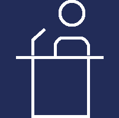

<div class="container">
  <div id="viz-menu" class="row">
    <div class="col-12">
        <ul class="nav justify-content-md-center">
          <li class="nav-item col-2 {% if page.id == 'tse' %} active {% endif %}">
            <div class="item-img">
              <a href="/tse"></a><br/>
            </div>
            <a href="/tse"><span class="white-text">Tribunal<br/>Supremo Electoral</span></a>
          </li>
          <li class="separator-white"></li>
          <li class="nav-item col-2 {% if page.id == 'resultados' %} active {% endif %}">
            <div class="item-img">
              <a href="/resultados"></a><br/>
            </div>
            <a href="/resultados"><span class="white-text">Resultados<br/>Electorales</span></a>
          </li>
          <li class="separator-white d-none d-md-block"></li>
          <li class="nav-item col-2 {% if page.id == 'organizaciones-politicas' %} active {% endif %}">
            <div class="item-img">
              <a href="/organizaciones-politicas"></a><br/>
            </div>
            <a href="/organizaciones-politicas"><span class="white-text">Organizaciones<br/>Políticas</span></a>
          </li>
          <li class="separator-white"></li>
          <li class="nav-item col-2 {% if page.id == 'medios-de-comunicacion' %} active {% endif %}">
            <div class="item-img">
              <a href="/medios-de-comunicacion"></a><br/>
            </div>
            <a href="/medios-de-comunicacion"><span class="white-text">Medios de<br/>Comunicación</span></a>
          </li>
        </ul>
    </div>
  </div>
</div>
